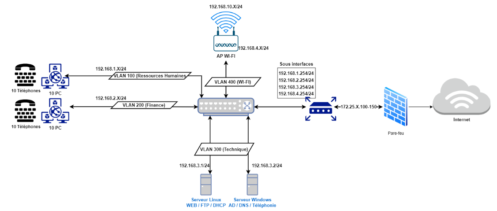

Project Presentation
As part of our first year in BUT Networks and Telecommunications, our team of five installed a small network over two weeks to simulate the one of a small company.
The goal was to make the network operational by adding various servers such as:
- - DHCP Server
- - DNS Server
- - Web Server
- - Telephony Server
- - FTP Server
- - Mail Server
- - Backup Server
- - Database Server
- - Log Server
We set up the following infrastructure:

The installation of each network device is detailed in the Network Infrastructure section